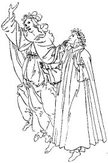

Nejvıznamnìjším centrem italské renesance byla Florencie.

Botticelli: Zrození Venuše
|
RENESANÈNÍ ITÁLIE
Renesance se zrodila v Itálii, kde pùsobila celá øada vıznamnıch vıtvarnıch umìlcù. Giotto (1266-1337) zaèal pouívat perspektivu, Leonardo da Vinci (1452-1519) vymyslel techniku lazur a sfumato, zkoumal anatomii a proporce lidského tìla, vymıšlel fantastické stroje (náèrtek „vrtulníku"), Michelangelo Buonarroti (1475-1564) byl vynikajícím malíøem (Sixtinská kaple v Øímì), sochaøem (David, Mojíš), stavitelem i básníkem. Nejvıznamnìjšími architekty byli Brunelleschi (kaple Pazziù v klášteøe Santa Croce ve Florencii), Palladio (vila Rotonda u Vicenzy) a Alberti, autor Deseti knih o stavitelství. V malíøství se proslavil Raffael (Sixtinská madona), Botticelli (Zrození Venuše), Giorgione (Bouøe), Tizian (Danaé pøijímající zlatı déš) a mnozí další. Vıznamnım sochaøem byl Donatello (Sv. Jiøí). Pro italské umìní 15. stol. se nìkdy pouívá termín quattrocento [kvatroèento] a pro 16. stol. cinquecento [èinkveèento].
Michelangelo: Stvoøení Adama, Sixtinská kaple
|
Historie
Itálie byla a do 19. stol. znaènì rozdrobená. Jih Apeninského poloostrova ovládalo neapolské a sicilské království, sever tvoøila øada mìstskıch republik a vévodství, které vedly ustavièné spory a zmítaly jimi èasté pøevraty. Své zájmy zde uplatòovali stoupenci císaøe (ghibelliní) i papee (guelfové), kterı stál v èele církevního státu. V italskıch válkách (1494-1559) porazilo Španìlsko Francii a ovládlo tak velkou èást Itálie.

Palladiùv projekt vily Rotonda, která stojí nedaleko Vicenzy.
|
Dante Alighieri (1265-1321)
Dante je znám jako autor rozsáhlé veršované skladby Boská komedie, kromì ní ale napsal øadu dalších dìl – milostné básnì, autobiografii Novı ivot a pojednání O státì a O lidové øeèi. Pøestoe byl Dante šastnì enatı, ideál enství pøedstavovala v jeho dílech jiná ena – Beatrice Portinariová, která pøedèasnì zemøela. Za své protipapeské postoje byl odsouzen k vyhnanství. Pobıval v Paøíi a italské Ravennì, kde je také pochován. Dantùv ivotopis zpracoval Boccaccio, jeho nejslavnìjší báseò (Komedie) doplnil o pøízvisko boská.
|
Dante Alighieri: Boská komedie
Dantova básnická skladba Boská komedie se skládá ze tøí èástí – Peklo, Oèistec a Ráj. Z jejich názvù je zøejmé, e autor zùstává vìrnı køesanskım ideálùm, ale v textu je u patrnı jeho obdiv k antice. Støedovìkı ánr alegorie zase doplòují antické prvky. To všechno dìlá z Danta pøedchùdce renesanèního umìní. Celá skladba má 100 zpìvù.
Básník sestupuje se svım prùvodcem Vergiliem do pekla, které je rozdìleno na devìt kruhù (nepokøtìní, smyslní, oberní, lakomci a marnotratníci, hnìvivci, kacíøi a nevìrníci, násilníci, podvodníci a zrádci) a kde se setkává s øadou mytologickıch postav, historickıch osobností, svıch pøátel i odpùrcù. Na dnì pekla sídlí Lucifer. Básník pokraèuje do oèistce, na jeho konci èeká Beatrice, aby ho provedla rájem (Vergilius byl pohan a do køesanského ráje nesmí). Spoleènì putují devíti sférami blaenıch a k sídlu Boha, kde básníka zasvìtí sv. Bernard do tajemství Trojice a Kristova vtìlení.
|
Italské vıtvarné umìní

Botticelliho ilustrace k Boské komedii – Dante a Beatrice
Jak si pøedstavuješ ráj, peklo a oèistec? Zkus ho nakreslit nebo popsat.
Podívej se, jak si ráj a peklo pøedstavoval nizozemskı malíø Hieronymus Bosch.
|
Francesco Petrarca
(1304-1374)

Petrarca byl jedním z prvních umìlcù, kterı dosáhl takového vìhlasu, e byl poøízen jeho autentickı portrét. Hodnì cestoval a navštívil Paøí i Prahu. Ve svıch dopisech se snail pøesvìdèit císaøe Karla IV., aby obnovil bıvalou slávu Øíma. Je autorem básnickıch sbírek Zpìvník a Triumfy.
|
Francesco Petrarca: Zpìvník
Zpìvník je sbírkou lyrickıch básní (vìtšinou sonetù a kancón) vìnovanıch Petrarkovì lásce Lauøe. Mnoho o ní nevíme. Vlastnì jen to, e zemøela bìhem moru, kterı postihl Florencii v roce 1348.
Francesco Petrarca:
A on napodiv ije dál, odsouzen toliko k bolesti, stejnì jako jeho loutna
Ty oèi, k nim se vroucnì vracela,
má píseò: pae, ruce, noka malá,
ta tváø, je od davu mì dìlívala,
a zmìnila mou mysl docela,
vlas, kterı linul zlato do èela,
ústa, v nich úsmìv archandìlskı sálá,
jím pokadé se zemì rájem stala...
To vše je u jen hrstka popela.
A jen já bídnı trapnì dále iji,
na moøi sám, bez milovanıch hvìzd,
loï bez kormidla, do ní vichry bijí.
O lásce sladké dozpíváno jest,
vyprahl pramen známıch melodií.
A loutnu svou mám u jen pro bolest.
|
|

Leonardo da Vinci: Mona Lisa (La Gioconda)
Zjisti, co je sonet a co je kancóna.
Zkus sloit sonet.
|
Giovanni Boccaccio
(1313 –1375)
Giovanni Boccaccio [dovani bokaèo] èasto pobıval ve Florencii a pøátelil se s Petrarkou. Je autorem rámcové novely Dekameron, románu Smutek paní Plamínkové, Dantova ivotopisu a mnoha dalších dìl.

Dekameron
|
Giovanni Boccaccio: Dekameron
Rámcová novela Dekameron obsahuje 100 na sobì nezávislıch pøíbìhù, které si vypravují 3 mui a 7 en po dobu deseti dní na venkovském sídle, kam uprchli z Florencie pøed øádìním moru. Kadı den je jeden z nich zvolen králem, vybere téma pøíbìhù a vybídne nìkoho k vyprávìní.
Mor, o kterém se píše v Dekameronu, skuteènì Florencii v roce 1348 postihl! Boccaccio ji naštìstí opustil a v Neapoli zaèal psát své nejslavnìjší dílo. Vìtšina pøíbìhù byla pøevzata z antickıch nebo støedovìkıch knih a popisuje rùzné peripetie milencù, manelskou nevìru nebo falešnou morálku duchovenstva. Boccaccio špatné mravy nekritizuje. Je vdy na stranì lásky, i kdy milenci porušují základní pravidla køesanské morálky. Dokonce dává své knize pøezdívku Arcikuplíøka. Není divu, e ji církev zakázala a sám Boccaccio se jí pøed smrtí zøekl.
Dlouhou dobu dovolovala církev vydávání Dekameronu pouze ve znaènì zcenzurované podobì.
|

Giorgione: Venkovskı koncert
Michelangelo: David
Èemu se Boccaccio vysmívá v tomto pøíbìhu?
Víš, jakı je rozdíl mezi povídkou, novelou a románem?
|
Niccolò Machiavelli
(1469-1527)
Kromì spisu Vladaø je Machiavelli autorem rozverné renesanèní komedie Mandragora, kterou církev nakonec zakázala, protoe v ní vystupuje mnich jako kuplíø...
|
Niccolò Machiavelli: Vladaø
Machiavelliho Vladaø je praktickı návod, jak si získat a udret moc. Bez morálních skrupulí jsou v nìm popsány rùzné zpùsoby ovládaní lidí. Autor razí myšlenku, e úèel svìtí prostøedky a dùleité je dosaení vytèeného cíle za kadou cenu. Jeho dílo tudí popírá základní zásady køesanské etiky.
Machiavelli vìnoval svùj spis Lorenzovi II. Medicejskému a oèekával, e se jím bude øídit pøi sjednocování Itálie. To se ovšem nestalo a Apeninskı poloostrov zùstal a do 19. století rozdìlenı na drobné státeèky.
Další díla
Tommaso Campanella: Sluneèní stát
Ludovico Ariosto: Zuøivı Roland
Baldassarre Castiglione: Dvoøan
|
Lorenzo Medici
Lorenzo II. Medici (1492-1519) byl vnukem Lorenza I. Medicejského (1449-1492), vládce Florencie, kterı podporoval renesanèní umìlce a sám se vìnoval psaní poezie.
Co si myslíš o Machiavellim a jeho Vladaøi?
Vysvìtli termín machiavelismus.
|
Internetové stránky
Italští renesanèní autoøi
Italská literatura
Machiavelli
Machiavelli: Vladaø
Italian Art, reprodukce
Sixtinská kaple, fotografie
Palladio, stavby
Florencie, zajímavosti
Virtual Uffizi, florentská galerie
Uffizi, florentská galerie

Albertiho nákres kostela Santa Maria Novella ve Florencii
|
Doporuèená èetba
Ariosto, Ludovico: Zuøivı Roland, pøel. J.Pokornı, Praha 1970
Boccaccio, Giovanni: Dekameron, pøel. R.Krátkı, Odeon
Boccaccio, d’Arezzo: Nejstarší ivotopisy Dantovy, pøel. O.E.Babler, Praha 1965
Buckhardt: Kultura renesanèní doby v Itálii
Buonarroti, Michelangelo: Oheò, jím hoøím, Mladá fronta, Praha 1999
Campanella: Sluneèní stát
Castiglione, Baldassarre: Dvoøan, pøel. A.Felix, Praha 1987
Dante Alighieri: Boská komedie, pøel. O.F.Babler, Odeon, Praha 1989
Dante Alighieri: Boská komedie, Komentovanı vıbìr, pøel. Vladimír Mikeš
Dante Alighieri: Novı ivot, Èeskoslovenskı spisovatel, Praha 1969
Italská renesanèní lyrika, SNKLHU, Praha 1954
Italské renesanèní novely, Vyšehrad, Praha 2000
Macek, J.: Italská renesance, Praha 1965
Machiavelli, Niccolò: Vladaø, pøel. F.Pokornı, Praha 1969
Navštívení krásy, Italská renesanèní lyrika, pøel. J.Vladislav
Petrarca, Francesco: Listy velkım i malım tohoto svìta, pøel. A.Rausch, Odeon, Praha 1974
Petrarca, F.: Sto sonetù Lauøe, pøel. V.Renè
Petrarca, F.: Zpìvník, pøel. J.Pokornı, Èeskoslovenskı spisovatel, Praha 1979
Schulz, Karel: Kámen a bolest (román o Michelangelovi)
Slovník spisovatelù, Itálie
Stone, Irving: Agónie a extáze, ivotopisnı román o Michelangelovi, pøel. D.Feltová, BB art, Praha 2001
Umìní italské renesance, Slovart, Praha 2000
|
Pøiprav si referát o nìkteré z uvedenıch knih nebo internetovıch stránek.
Tizian: Apollo trestá Marsya

Raffael: Athénská škola
|
|